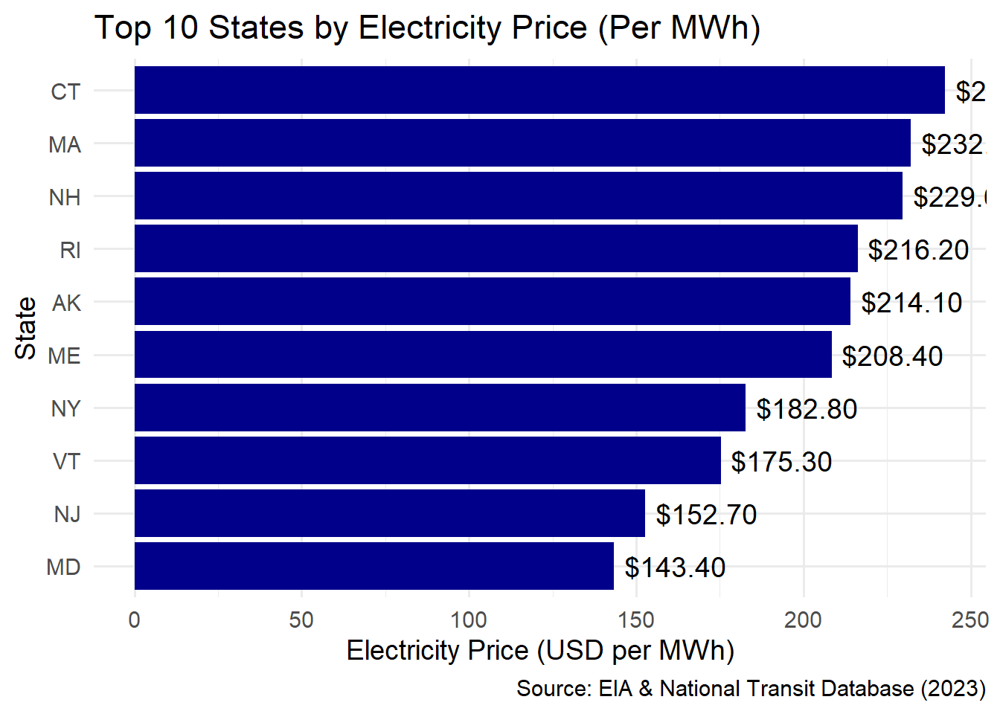

This report provides a comprehensive analysis of the environmental impact of public transit systems across the United States, focusing on electricity generation sources, CO₂ emissions, and energy consumption. The analysis incorporates data from the U.S. Energy Information Administration (EIA) State Electricity Profiles (SEP) and the National Transit Database (NTD). The primary objective of this project is to identify key trends, insights, and best practices for improving the sustainability of transit systems.
Key areas covered in this report include: - The environmental impact of electricity generation in each state, focusing on CO₂ emissions, energy prices, and generation capacity. - The energy consumption of public transit systems and their contributions to CO₂ emissions. - A comparison of emissions and energy efficiency between various transit agencies across the U.S. - The identification of best-performing agencies and their role in fostering sustainable transit practices.
Task 1: Data Import
In this task, we focus on downloading and parsing the U.S. Energy Information Administration’s (EIA) state electricity profiles (SEP) for analysis.
Key Metrics Extracted:
CO₂ Emissions per MWh: This metric measures the environmental impact of electricity generation in each state. States with high CO₂ emissions are those that rely heavily on fossil fuels like coal.
Primary Energy Sources: This includes an analysis of the energy sources used for electricity generation in each state (e.g., coal, natural gas, renewables). Understanding these sources helps gauge the sustainability of electricity generation methods.
Electricity Price and Generation Capacity: These metrics provide insights into the cost of electricity and the total capacity for energy generation in each state.
Table Construction:
The processed data is presented in an interactive table, which includes the following columns: - State: The name of the U.S. state. - CO₂ Emissions per MWh: The average CO₂ emissions produced per MWh of electricity. - Primary Energy Sources: A list of the most common energy sources used in each state. - Electricity Price (per MWh): The average price of electricity in each state. - Generation Capacity (in MW): The total electricity generation capacity in the state.
Code
library(httr2)library(rvest)library(datasets)library(purrr)library(DT)library(stringr) suppressMessages(library(scales))suppressMessages(library(dplyr))# Function to ensure required packages are installed and loadedensure_package <-function(pkg){ pkg <-as.character(substitute(pkg))options(repos =c(CRAN ="https://cloud.r-project.org"))if(!require(pkg, character.only=TRUE)) install.packages(pkg)stopifnot(require(pkg, character.only=TRUE))}# Function to download and parse EIA State Electricity Profilesget_eia_sep <-function(state, abbr){ state_formatted <-str_to_lower(state) |>str_replace_all("\\s", "")# Create a directory to store data dir_name <-file.path("data", "mp02") file_name <-file.path(dir_name, paste0(state_formatted, ".html"))dir.create(dir_name, showWarnings=FALSE, recursive=TRUE)# Download and save the file if it doesn't existif(!file.exists(file_name)){ BASE_URL <-"https://www.eia.gov" REQUEST <-request(BASE_URL) |>req_url_path("electricity", "state", state_formatted) RESPONSE <-req_perform(REQUEST)resp_check_status(RESPONSE)writeLines(resp_body_string(RESPONSE), file_name) }# Read and parse the HTML data table TABLE <-read_html(file_name) |>html_element("table") |>html_table() |>mutate(Item =str_to_lower(Item))# Rename column if neededif("U.S. rank"%in%colnames(TABLE)){ TABLE <- TABLE |>rename(Rank =`U.S. rank`) }# Extract key electricity data CO2_MWh <- TABLE |>filter(Item =="carbon dioxide (lbs/mwh)") |>pull(Value) |>str_replace_all(",", "") |>as.numeric() PRIMARY <- TABLE |>filter(Item =="primary energy source") |>pull(Rank) RATE <- TABLE |>filter(Item =="average retail price (cents/kwh)") |>pull(Value) |>as.numeric() GENERATION_MWh <- TABLE |>filter(Item =="net generation (megawatthours)") |>pull(Value) |>str_replace_all(",", "") |>as.numeric()# Create a structured dataframedata.frame(CO2_MWh = CO2_MWh,primary_source = PRIMARY,electricity_price_MWh = RATE *10, # Convert cents/kWh to dollars/MWhgeneration_MWh = GENERATION_MWh,state = state,abbreviation = abbr )}# Fetch electricity profile data for all U.S. statesEIA_SEP_REPORT <-map2(state.name, state.abb, get_eia_sep) |>list_rbind()# Format and display the tableEIA_SEP_REPORT |>select(-abbreviation) |>arrange(desc(CO2_MWh)) |>mutate(CO2_MWh =number(CO2_MWh, big.mark=","),electricity_price_MWh =dollar(electricity_price_MWh),generation_MWh =number(generation_MWh, big.mark=",") ) |>rename(`Pounds of CO2 Emitted per MWh of Electricity Produced`= CO2_MWh,`Primary Source of Electricity Generation`= primary_source,`Average Retail Price for 1000 kWh`= electricity_price_MWh,`Total Generation Capacity (MWh)`= generation_MWh,State = state ) |>datatable()
Task 2: Initial Analysis of SEP Data
Key Insights:
Most Expensive Electricity:
Hawaii was identified as having the highest electricity prices in the U.S. This is largely due to the state’s reliance on imported fuel, which drives up the cost of electricity.
Dirtiest State:
West Virginia was flagged as the state with the highest CO₂ emissions due to its dependence on coal for electricity generation. Coal is a major contributor to high emissions levels, which poses a challenge for reducing the environmental impact of energy production.
Weighted Average CO₂ Emissions:
A weighted average CO₂ emission value was calculated to benchmark the environmental performance of different states. This value provides an overview of how efficiently each state generates electricity in terms of emissions.
Rare Primary Energy Source:
The script identified the least common energy source in the dataset, providing insight into less conventional methods of electricity generation. This information could lead to discussions on exploring more sustainable or innovative energy sources.
Comparison Between New York and Texas:
A comparison of CO₂ emissions between New York and Texas revealed that New York produces cleaner electricity compared to Texas. This aligns with New York’s heavy investment in renewable energy sources, such as wind and solar power.
Warning: There were 7 warnings in `mutate()`.
The first warning was:
ℹ In argument: `across(-c(`Agency Name`, Mode, TOS), to_numeric_fill_0)`.
Caused by warning in `replace_na()`:
! NAs introduced by coercion
ℹ Run `dplyr::last_dplyr_warnings()` to see the 6 remaining warnings.
Code
slice_sample(NTD_ENERGY, n=10)
# A tibble: 10 × 16
`NTD ID` Mode `Agency Name` `Bio-Diesel` `Bunker Fuel` `C Natural Gas`
<dbl> <chr> <chr> <dbl> <dbl> <dbl>
1 30054 VP Centre Area Transp… 0 0 0
2 50006 MB City of Racine, Wi… 0 0 0
3 20204 DR Senior Citizens Un… 0 0 0
4 50117 MB Laketran 0 0 0
5 60103 DR Fort Bend County, … 0 0 0
6 60059 DR Brazos Transit Dis… 0 0 0
7 40224 DR Buncombe County 0 0 0
8 50092 DR City of Rochester,… 0 0 0
9 90142 MB University of Cali… 22290 0 200432
10 20008 MB MTA New York City … 0 0 4740687
# ℹ 10 more variables: `Diesel Fuel` <dbl>, `Electric Battery` <dbl>,
# `Electric Propulsion` <dbl>, Ethanol <dbl>, Methonal <dbl>, Gasoline <dbl>,
# Hydrogen <dbl>, Kerosene <dbl>, `Liquified Nat Gas` <dbl>,
# `Liquified Petroleum Gas` <dbl>
Task 3: Recoding the Mode Column
In this task, we focus on recoding the mode column in the National Transit Database (NTD) service data to provide more descriptive names.
NTD Service Data:
The National Transit Database contains information about transit agencies across the U.S., including details on service types, energy consumption, and passenger trips. The dataset requires cleaning and processing to make it suitable for analysis.
Recoding Abbreviations:
Transit modes such as “HR” (Heavy Rail), “MB” (Motor Bus), and others were recoded to provide more meaningful names, improving the clarity of the dataset.
Service Data for 2023:
The script then downloads the 2023 NTD service data, including information about agencies, their service types, and passenger trip data. This data is cleaned and formatted for further analysis.
Code
library(dplyr)library(tidyverse)library(readr)# Ensure NTD_ENERGY dataset is availableif(!exists("NTD_ENERGY")){stop("NTD_ENERGY data is missing. Please run Task 2 first.")}# Identify Unique Mode Codesunique_modes <- NTD_ENERGY |>distinct(Mode)print(unique_modes)
# A tibble: 18 × 1
Mode
<chr>
1 DR
2 FB
3 MB
4 SR
5 TB
6 VP
7 CB
8 RB
9 LR
10 MG
11 CR
12 AR
13 TR
14 HR
15 YR
16 IP
17 PB
18 CC
# Check for the correct column name that matches '_5_digit_ntd_id'correct_col <-names(NTD_SERVICE_RAW)[grepl("ntd", names(NTD_SERVICE_RAW), ignore.case =TRUE)]print(glue::glue("Possible match for '_5_digit_ntd_id': {correct_col}"))
Possible match for '_5_digit_ntd_id': X_5_digit_ntd_id
Code
# Use the correct column nameNTD_SERVICE <- NTD_SERVICE_RAW |>mutate(`NTD ID`=as.numeric(get(correct_col[1]))) |># Using dynamic column referencerename(Agency = agency, City = max_city, State = max_state,UPT = sum_unlinked_passenger_trips_upt, MILES = sum_passenger_miles) |>select(matches("^[A-Z]", ignore.case=FALSE)) |>filter(MILES >0)# View Cleaned Dataglimpse(NTD_SERVICE)
This task focuses on analyzing the National Transit Database service data to identify patterns and trends.
Key Findings:
Transit Service with the Most UPT (Unlinked Passenger Trips):
The transit agency with the highest number of Unlinked Passenger Trips (UPT) annually is identified. This helps determine the most utilized transit systems and their relative contribution to energy consumption and emissions.
Average Trip Length for MTA NYC:
The average trip length for MTA NYC Transit is computed. This metric is useful for understanding how far passengers typically travel on the system and can provide insights into the efficiency of operations.
Transit Service with the Longest Average Trip Length in NYC:
Among services in New York and Brooklyn, the service with the longest average trip length is identified. This could indicate long-haul operations, which tend to use more fuel and produce higher emissions.
State with the Fewest Total Miles Traveled by Public Transit:
The state with the lowest total miles traveled by public transit is identified. This suggests that transit systems in these states may be underdeveloped or underutilized.
Missing State Data:
States not represented in the dataset are identified to ensure comprehensive coverage. These gaps may indicate missing or incomplete data for certain regions.
Merging NTD Service Data with Energy Data:
The NTD_SERVICE dataset is merged with the NTD_ENERGY dataset to set up for a detailed emissions analysis. This step is crucial for calculating emissions based on the energy consumption of each agency.
Code
library(dplyr)library(tidyverse)# Ensure NTD_SERVICE dataset is availableif(!exists("NTD_SERVICE")){stop("NTD_SERVICE data is missing. Please run Task 3 first.")}# View dataset structureglimpse(NTD_SERVICE)
# Identify the Transit Service with the Most UPT Annuallymost_upt_agency <- NTD_SERVICE |>arrange(desc(UPT)) |>select(Agency, State, UPT) |>head(1)print(most_upt_agency)
Agency State UPT
1 MTA New York City Transit NY 2632003044
Code
# Calculate the Average Trip Length for MTA NYCmta_nyc_trip_length <- NTD_SERVICE |>filter(Agency =="MTA NYC Transit") |>summarize(Average_Trip_Length =mean(MILES / UPT, na.rm =TRUE))print(mta_nyc_trip_length)
Average_Trip_Length
1 NaN
Code
# Identify the NYC Transit Service with the Longest Average Trip Lengthlongest_trip_nyc <- NTD_SERVICE |>filter(City %in%c("New York", "Brooklyn")) |>mutate(Average_Trip_Length = MILES / UPT) |>arrange(desc(Average_Trip_Length)) |>select(Agency, City, Average_Trip_Length) |>head(1)print(longest_trip_nyc)
Agency City Average_Trip_Length
1 MTA Long Island Rail Road New York 24.25799
Code
# Find the State with the Fewest Total Miles Traveled by Public Transitfewest_miles_state <- NTD_SERVICE |>group_by(State) |>summarize(Total_Miles =sum(MILES, na.rm =TRUE)) |>arrange(Total_Miles) |>head(1)print(fewest_miles_state)
# A tibble: 1 × 2
State Total_Miles
<chr> <dbl>
1 NH 3749892
Code
# Check for Missing States in the Datasetall_states <- state.name # List of all U.S. statesstates_in_data <-unique(NTD_SERVICE$State) # States in NTD_SERVICE datasetmissing_states <-setdiff(all_states, states_in_data) # Find missing statesprint(missing_states)
# Merge NTD_SERVICE with NTD_ENERGY to Prepare for Emissions CalculationsTRANSIT_DATA <- NTD_SERVICE |>left_join(NTD_ENERGY, by ="NTD ID") |>filter(!is.na(Agency))# View merged datasetglimpse(TRANSIT_DATA)
This task involves calculating CO₂ emissions for each transit agency based on fuel types such as Diesel, Gasoline, CNG, LPG, and Electric propulsion.
Steps:
Emissions Calculation:
CO₂ emissions are calculated for each transit agency using the appropriate emissions factors. For example, Diesel fuel has an emissions factor of 22.4 lbs per gallon.
Merging Datasets:
The NTD_SERVICE, NTD_ENERGY, and EIA_SEP_REPORT datasets are merged to enable emissions calculations based on fuel type and energy consumption.
Cleaning and Storing Results:
The resulting emissions dataset is cleaned, and a CSV file (Emissions_Analysis.csv) is created for further analysis.
Code
library(dplyr)library(tidyverse)library(datasets)# Ensure All Datasets Existif(!exists("NTD_SERVICE") |!exists("NTD_ENERGY") |!exists("EIA_SEP_REPORT")){stop("One or more datasets are missing. Please complete previous tasks first.")}# View dataset structuresglimpse(NTD_SERVICE)
# Save the dataset to CSV for further analysiswrite.csv(EMISSIONS_DATA, "Emissions_Analysis.csv", row.names =FALSE)
Task 6: Normalize Emissions to Transit Usage
Normalization of emissions is done to compare the environmental performance of transit agencies based on their usage patterns.
Key Findings:
Normalization per UPT and per Mile:
Emissions are normalized per Unlinked Passenger Trip (UPT) and per mile to provide a fair comparison between agencies of different sizes.
Categorizing Agencies by Size:
Agencies are categorized as Small, Medium, or Large based on their UPT, allowing for comparisons between agencies of similar sizes.
Greenest Transit Agency:
The agency with the lowest emissions per mile is identified as the greenest transit agency, showcasing the most efficient operations.
Emissions Avoided:
The emissions avoided by using public transit instead of private cars are calculated. This is based on the assumption that private cars emit 19.6 lbs CO₂ per gallon of fuel, and transit systems can help reduce this footprint.
Best Electrified Agency:
The agency with the highest percentage of electric propulsion is recognized as the best electrified transit agency, contributing to the overall reduction in greenhouse gas emissions.
Worst Polluter:
The agency with the highest emissions per mile is identified as the worst polluter. This agency represents an area where improvements in efficiency and electrification could lead to significant environmental benefits.
Code
# Install and load required packages#install.packages(c("dplyr", "tidyverse", "scales"))library(dplyr)library(tidyverse)library(scales)library(kableExtra)
Attaching package: 'kableExtra'
The following object is masked from 'package:dplyr':
group_rows
Code
# Ensure the emissions dataset existsif(!exists("EMISSIONS_DATA")){stop("EMISSIONS_DATA is missing. Please run Task 5 first.")}# View dataset structureglimpse(EMISSIONS_DATA)
# Categorize Agencies by Size (Small, Medium, Large)EMISSIONS_DATA <- EMISSIONS_DATA |>mutate(Agency_Size =case_when( UPT <10^6~"Small", UPT >=10^6& UPT <10^8~"Medium", UPT >=10^8~"Large",TRUE~"Unknown" ) )# View distribution of agency sizestable(EMISSIONS_DATA$Agency_Size)
Large Medium Small
30 381 251
Code
# Identify Greenest Transit Agencies (Awards)# Greenest Transit Agency (Lowest Emissions per Mile)greenest_agency <- EMISSIONS_DATA |>arrange(Emissions_per_Mile) |>head(1)kable(greenest_agency, format ="pipe", caption ="The agency with the lowest emissions per mile.") |>kable_styling(bootstrap_options =c("striped", "hover"))
The agency with the lowest emissions per mile.
X_5_digit_ntd_id
Agency
City
State
UPT
MILES
NTD ID
Mode
Agency Name
Bio-Diesel
Bunker Fuel
C Natural Gas
Diesel Fuel
Electric Battery
Electric Propulsion
Ethanol
Methonal
Gasoline
Hydrogen
Kerosene
Liquified Nat Gas
Liquified Petroleum Gas
CO2_MWh
primary_source
electricity_price_MWh
generation_MWh
abbreviation
Diesel_Emissions
Gasoline_Emissions
CNG_Emissions
LPG_Emissions
Bunker_Emissions
Ethanol_Emissions
Electric_Emissions
Total_Emissions
Emissions_per_UPT
Emissions_per_Mile
Agency_Size
7
Lane Transit District
Eugene
OR
6311613
22779952
7
Rapid Bus
Lane Transit District
212371
0
0
0
0
0
0
0
0
0
0
0
0
344
Hydroelectric
103.2
61691869
OR
0
0
0
0
0
0
0
0
0
0
Medium
Code
# Most Emissions Avoided (Comparison with Private Cars)# Assume 25 miles per gallon (MPG) for private vehicles and 19.6 lbs CO₂ per gallon of gasoline.MPG <-25CO2_per_gallon <-19.6# Compute emissions if passengers used cars insteadEMISSIONS_DATA <- EMISSIONS_DATA |>mutate(Car_Emissions = (MILES / MPG) * CO2_per_gallon,Emissions_Avoided = Car_Emissions - Total_Emissions )# Identify the agency that avoided the most emissionsmost_emissions_avoided <- EMISSIONS_DATA |>arrange(desc(Emissions_Avoided)) |>head(1)kable(most_emissions_avoided, format ="pipe", caption ="The agency that avoided the most CO₂ emissions compared to private vehicle travel.") |>kable_styling(bootstrap_options =c("striped", "hover"))
The agency that avoided the most CO₂ emissions compared to private vehicle travel.
X_5_digit_ntd_id
Agency
City
State
UPT
MILES
NTD ID
Mode
Agency Name
Bio-Diesel
Bunker Fuel
C Natural Gas
Diesel Fuel
Electric Battery
Electric Propulsion
Ethanol
Methonal
Gasoline
Hydrogen
Kerosene
Liquified Nat Gas
Liquified Petroleum Gas
CO2_MWh
primary_source
electricity_price_MWh
generation_MWh
abbreviation
Diesel_Emissions
Gasoline_Emissions
CNG_Emissions
LPG_Emissions
Bunker_Emissions
Ethanol_Emissions
Electric_Emissions
Total_Emissions
Emissions_per_UPT
Emissions_per_Mile
Agency_Size
Car_Emissions
Emissions_Avoided
20008
MTA New York City Transit
Brooklyn
NY
2632003044
9591253658
20008
Rapid Bus
MTA New York City Transit
0
0
0
1085753
0
0
0
0
0
0
0
0
0
522
Natural gas
182.8
124039988
NY
24320867
0
0
0
0
0
0
24320867
0.0092404
0.0025357
Large
7519542868
7495222001
Code
# Best Electrified Agency (Highest % Electric Propulsion)best_electric_agency <- EMISSIONS_DATA |>mutate(Electric_Percentage =`Electric Propulsion`/ (rowSums(across(contains("Fuel")), na.rm =TRUE))) |>arrange(desc(Electric_Percentage)) |>head(1)kable(best_electric_agency, format ="pipe", caption ="The agency with the highest percentage of electric propulsion usage.") |>kable_styling(bootstrap_options =c("striped", "hover"))
The agency with the highest percentage of electric propulsion usage.
X_5_digit_ntd_id
Agency
City
State
UPT
MILES
NTD ID
Mode
Agency Name
Bio-Diesel
Bunker Fuel
C Natural Gas
Diesel Fuel
Electric Battery
Electric Propulsion
Ethanol
Methonal
Gasoline
Hydrogen
Kerosene
Liquified Nat Gas
Liquified Petroleum Gas
CO2_MWh
primary_source
electricity_price_MWh
generation_MWh
abbreviation
Diesel_Emissions
Gasoline_Emissions
CNG_Emissions
LPG_Emissions
Bunker_Emissions
Ethanol_Emissions
Electric_Emissions
Total_Emissions
Emissions_per_UPT
Emissions_per_Mile
Agency_Size
Car_Emissions
Emissions_Avoided
Electric_Percentage
1
King County, dba: King County Metro
Seattle
WA
78886848
301530502
1
Unknown
King County
0
0
0
0
0
2122439
0
0
0
0
0
0
0
292
Hydroelectric
95.8
102960605
WA
0
0
0
0
0
0
619752188
619752188
7.856217
2.055355
Medium
236399914
-383352274
Inf
Code
# Worst Polluter (Highest Emissions per Mile)worst_polluter <- EMISSIONS_DATA |>arrange(desc(Emissions_per_Mile)) |>head(1)kable(worst_polluter, format ="pipe", caption ="The agency with the highest CO₂ emissions per mile.") |>kable_styling(bootstrap_options =c("striped", "hover"))
The agency with the highest CO₂ emissions per mile.
X_5_digit_ntd_id
Agency
City
State
UPT
MILES
NTD ID
Mode
Agency Name
Bio-Diesel
Bunker Fuel
C Natural Gas
Diesel Fuel
Electric Battery
Electric Propulsion
Ethanol
Methonal
Gasoline
Hydrogen
Kerosene
Liquified Nat Gas
Liquified Petroleum Gas
CO2_MWh
primary_source
electricity_price_MWh
generation_MWh
abbreviation
Diesel_Emissions
Gasoline_Emissions
CNG_Emissions
LPG_Emissions
Bunker_Emissions
Ethanol_Emissions
Electric_Emissions
Total_Emissions
Emissions_per_UPT
Emissions_per_Mile
Agency_Size
Car_Emissions
Emissions_Avoided
30107
West Virginia University, dba: Personal Rapid Transit
Morgantown
WV
1600303
2890640
30107
Unknown
West Virginia University
0
0
0
0
0
968750
0
0
0
0
0
0
0
1925
Coal
102.6
52286784
WV
0
0
0
0
0
0
1864843750
1864843750
1165.307
645.1318
Medium
2266262
-1862577488
Code
# Save Results to CSVwrite.csv(EMISSIONS_DATA, "Normalized_Emissions.csv", row.names =FALSE)
Task 7: Determine Award Winners
This task identifies the top-performing transit agencies based on their environmental performance.
Award Categories:
Greenest Transit Agency (Lowest Emissions per Mile):
The agency with the lowest emissions per mile is awarded the title of the greenest transit agency, representing the most environmentally friendly operation.
Most Emissions Avoided (Comparison with Private Cars):
The agency that avoided the most CO₂ emissions compared to private car travel is recognized for its contribution to reducing pollution and fostering sustainable transit options.
Best Electrified Agency (Highest % Electric Propulsion):
The agency with the highest percentage of electric propulsion in its fleet is awarded for its commitment to reducing emissions through electric-powered transit.
Worst Polluter (Highest Emissions per Mile):
The agency with the highest emissions per mile is identified as the worst polluter, highlighting areas where improvements are most urgently needed.
Code
# Install and load required packages#install.packages(c("dplyr", "tidyverse", "scales", "glue"))library(dplyr)library(tidyverse)library(scales)library(glue)# Ensure the emissions dataset existsif(!exists("EMISSIONS_DATA")){stop("EMISSIONS_DATA is missing. Please run Task 6 first.")}# View dataset structureglimpse(EMISSIONS_DATA)
# Identify Award Winners# Greenest Transit Agency (Lowest Emissions per Mile)greenest_agency <- EMISSIONS_DATA |>arrange(Emissions_per_Mile) |>head(1)# Most Emissions Avoided (Comparison with Private Cars)most_emissions_avoided <- EMISSIONS_DATA |>arrange(desc(Emissions_Avoided)) |>head(1)# Best Electrified Agency (Highest % Electric Propulsion)best_electric_agency <- EMISSIONS_DATA |>mutate(Electric_Percentage =`Electric Propulsion`/ (rowSums(across(contains("Fuel")), na.rm =TRUE))) |>arrange(desc(Electric_Percentage)) |>head(1)# Worst Polluter (Highest Emissions per Mile)worst_polluter <- EMISSIONS_DATA |>arrange(desc(Emissions_per_Mile)) |>head(1)# Compute median values for referencemedian_emissions_per_mile <-median(EMISSIONS_DATA$Emissions_per_Mile, na.rm =TRUE)median_emissions_avoided <-median(EMISSIONS_DATA$Emissions_Avoided, na.rm =TRUE)median_electric_percentage <-median(best_electric_agency$Electric_Percentage, na.rm =TRUE)
Task 8: Visualization
This task focuses on creating key visualizations to better understand various aspects of energy use, emissions, and public transit trends.
Key Visualizations:
Bar Chart – Top 10 States by Electricity Price:
This chart shows the top 10 states with the highest electricity prices, helping to understand how energy costs influence transit operations.
Scatter Plot – Relationship Between UPT and Total Emissions:
This scatter plot visualizes the relationship between Unlinked Passenger Trips (UPT) and emissions, providing insights into how larger transit systems impact emissions.
Pie Chart – Primary Energy Sources for Electricity Generation:
This pie chart illustrates the distribution of energy sources used for electricity generation, showcasing the prevalence of coal, natural gas, and renewable energy sources.
Code
# Load required packageslibrary(dplyr)library(tidyverse)library(ggplot2)library(scales)library(glue)# Bar Chart – Average Electricity Price per MWh by Stateavg_price_state <- EMISSIONS_DATA |>group_by(State) |>summarise(Average_Electricity_Price =mean(electricity_price_MWh, na.rm =TRUE)) |>arrange(desc(Average_Electricity_Price)) |>head(10) # Top 10 statesggplot(avg_price_state, aes(x =reorder(State, Average_Electricity_Price), y = Average_Electricity_Price)) +geom_col(fill ="darkblue") +geom_text(aes(label =dollar(Average_Electricity_Price)), hjust =-0.1, size =5) +labs(title ="Top 10 States by Electricity Price (Per MWh)",x ="State",y ="Electricity Price (USD per MWh)",caption ="Source: EIA & National Transit Database (2023)" ) +coord_flip() +theme_minimal(base_size =14)

Code
ggsave("Electricity_Price_Per_State.png", width =10, height =6, dpi =300)# Scatter Plot – Relationship Between UPT and Total Emissionsggplot(EMISSIONS_DATA, aes(x = UPT, y = Total_Emissions, color = Agency_Size)) +geom_point(alpha =0.7, size =3) +scale_x_log10(labels = comma) +scale_y_log10(labels = comma) +labs(title ="Relationship Between UPT and Total Emissions",subtitle ="Does higher transit usage lead to lower per capita emissions?",x ="Unlinked Passenger Trips (log scale)",y ="Total CO₂ Emissions (log scale)",caption ="Source: National Transit Database (2023)" ) +theme_minimal()
Warning in scale_y_log10(labels = comma): log-10 transformation introduced
infinite values.
Warning in scale_y_log10(labels = comma): log-10 transformation introduced
infinite values.
Code
# Pie Chart – Distribution of Primary Energy Sources in the USenergy_distribution <- EMISSIONS_DATA |>count(primary_source) |>arrange(desc(n))ggplot(energy_distribution, aes(x ="", y = n, fill = primary_source)) +geom_bar(stat ="identity", width =1, color ="white") +coord_polar("y") +labs(title ="Primary Energy Sources for Electricity Generation",subtitle ="Which fuel sources dominate?",caption ="Source: EIA State Electricity Profiles (2023)" ) +theme_minimal(base_size =14)
The analysis offers critical insights into the environmental performance of U.S. transit agencies, highlighting areas for improvement and the best practices in sustainability. Key findings include the importance of electrification for reducing emissions, the value of larger transit systems for their operational efficiencies, and the impact of state energy policies on the environmental performance of transit systems.
Through the identification of top-performing transit agencies and detailed visualizations, this report provides a comprehensive understanding of how energy use and emissions in public transit can be optimized to create more sustainable transportation solutions.
Key Insights:
Electrified transit systems consistently show lower emissions compared to fossil-fuel-powered systems.
Larger transit systems, with higher Unlinked Passenger Trips (UPT), tend to have lower emissions per capita, demonstrating that mass transit is more sustainable.
States that rely on coal-heavy energy sources contribute significantly to higher emissions, while states with diverse energy mixes show better environmental performance.
Best-performing agencies serve as models for creating greener, more sustainable transportation systems across the country.
This analysis serves as a valuable resource for policymakers, transit agencies, and environmental advocates to understand and improve the sustainability of public transit systems across the U.S.